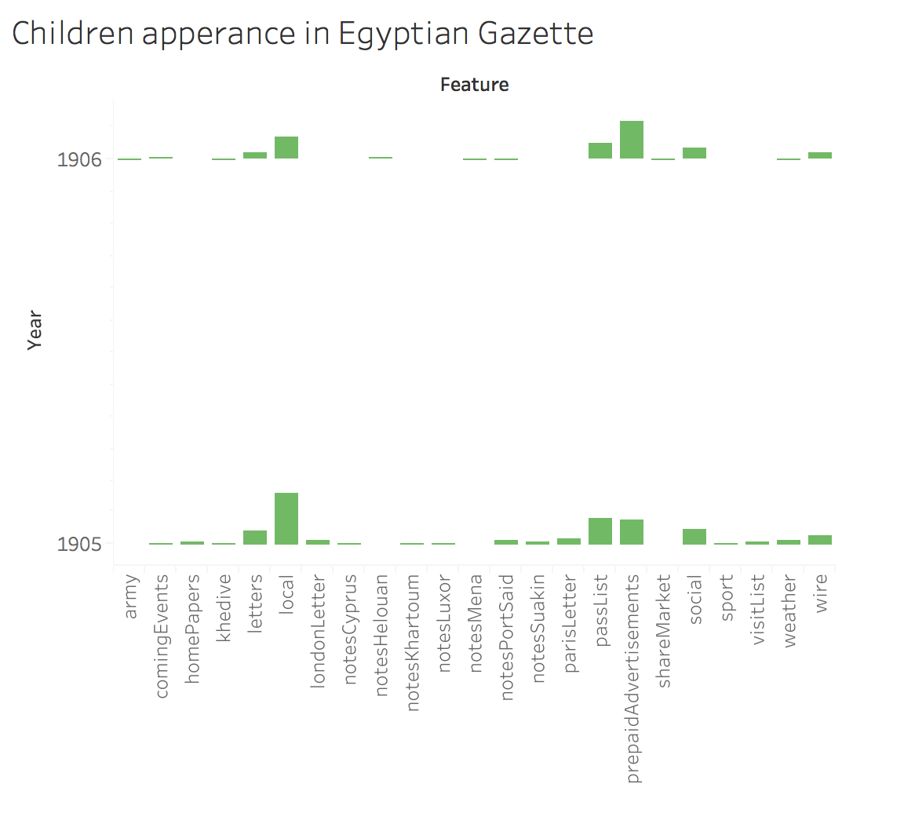

Analysis topic
The Egyptian Gazette is filled with information from accidents to steamship schedules. Over the course of this course of this class I have read countless articles on Lord Cromer and the Plague, but there has been little mention of children in Alexandria. With the help of Mr. Hanley I choose to further look into an area of history that this class has not studied. There is little known about children in Alexandria during the early 1900's. A chapter in “Childhood in the Late Ottoman Empire and After” by Benjamin Fortna gave me the only insight I could find into childhood. He said “Girls stayed at home until around the age of five, when they would then begin fetching water and helping their mothers with such work as cooking, cleaning and making fuel cakes. Boys also usually stayed home until the age of five, when they would then begin to take the donkeys to the field or the buffalo to the canal” (Fortna). This gave me insight into the expectations of children, but I wanted to know more.Therefore, my analysis question is, how are children described in the Egyptian Gazette?
Procedure
After finalizing my analysis question, it was important to narrow down what I was looking for. My first step was to write an Xpath query that would find how many times child appeared in the Egyptian Gazette. I used //div[contains(.,"Child")] and found over 18,000 results. I knew this overwhelming amount of data had to be better classified, so I choose to use another Xpath Query: //div[contains(.,"child")]/@feature. This Xpath looks in all the div that contain the word child that fall under a feature in the Gazette. This Xpath had produced 297 results. I than took all 297 results and placed them into Atom. After cleaning up the results to only have the date and the feature name, I transferred the results into Tableau to make a graph. After looking over the results I realized that there were results that included information that was not about children. I felt it was important to only include information that related directly to children. This meant that I had to get rid of results that included last names. Instead of going through all the results individually using the Xpath from above, I broke the Xpath down further. I used the find and replace button on Oxygen. I first entered in the text to find box the word child and the restriction to Xpath was //div[@feature="?"]. The question mark was replaced with any of the words that feature equalled on the graph. I started with @feature="army” and ended with @feature="wire”. This helped me eliminate the results that included last names and information that did not tell me about children in Alexandria. When I changed the restriction Xpath I found data that was not included in the original /@feature div, so I was able to add dates and features that were important for the graph.
Tableau Table
Using Tableau I organized my results into features vs. years. I choose to get remove the year 1907 because there were little results and most of the results were prepaid advertisements. I made this table to see what feature of the Egyptian Gazette contained the most articles with children in them. If I could better pinpoint a section of the newspaper I could better collect data that would allow for me to see how children were described in the Egyptian Gazette.

Results
After creating the graph I found out that the most mentions of child was in the local and general section of the Egyptian Gazette. Prepaid Advertisements was the second highest, but most of these were advertisements that were repeated throughout the weeks. Advertisements told me about what children could wear and toys they had, but not much information about children themselves.
Local and General
I decided to look into the findings of child in the local and general section of the newspaper. Overall, the mention of children ranged from a variety of different topics. The most interesting of these findings are: entertainment, child found, hospital, children and accidents and child weddings.
Entertainment
Throughout the local and general section children entertainment was a major reoccurrence. The San Stefano Casino hosted the Children's ball. The Children's ball was put on about seven to eight times during 1905-1906. The readings suggested that the ball brought together a large amount of young people. Through the reports made the ball appear elegant, tasty, and enjoyable. contained and The main feature of a ball mentioned on August 19, 1905 was a Massinet pavan, which was danced by children. Children seem to have danced and put on performances a lot for Alexandria events. Alexandria also started hosted matinee's for children in 1906. Along with entertainment for children there were fundraisers that benefited the well-being of children in Alexandria. On February 8, 1905 The Germania lodge was hosting a ball that collected articles of warm clothing for indigent children. Another fundraiser was reported on April 26, 1906 saying the committee of the Rudolph Home wanted to thank the ladies of the Rudolph Guild for their gifts of Children's clothing. I thought it was interesting how throughout the years adults were coming together to give back to children, and take care of children in their city. One man, Idris Bey Ragheb who donated fifty pounds on the occasion of his daughter's marriage which a portion of that money went to education for orphan children. Giving back in Alexandria for the well-being of children seems to be very important, which is still a very relevant in today's society.
Child Found
A surprising amount of reports in the Local and General section included found children. Through 1905-1906 six children were found missing. The first report occurred on July 1st, 1905 when a new born baby was found and brought to the hospital. All of the children that were found were new born babies that were left in the streets or in corners of the city. After reading about all these children, I wonder what was the point of reporting this in the newspaper? Who would be looking for these found children? New born babies could not crawl away in the middle of the night, most likely these children were left there by their parents.
Hospital
To my surprise the Egyptian Gazette discussed child mortality rates in hospitals. On May 5, 1906 the Cairo Foundlings Hospital reports that mortality still remains to be very high and “Last year, out of 76 children admitted no less than 64 died.” This was surprising because on there were no reports of why children went into the hospital.
Children and accidents
According to my results children were involved in accidents 15 times over the course of two years. Two children in Alexandria were burned to death, three children were drowned and one boy died of electrocution. Two children were killed by either a railway tram or tramcar while one boy was thrown out of a train but he survived. One child was kidnapped while another was murdered and one was found buried in a cotton field. One chid got bite by a dog, but survived and one little boy had a wheelbarrow fall on him and left him with internal injuries that killed him.In the Journal article “An Anti-Serum for Scorpion Venom” Charles Todd talks about the many deaths that occur in Cairo every year due to Scorpion stings. He says “These deaths are practically confined to Cairo and Upper Egypt, and are almost entirely among children” (Todd). In my findings three children got bit by scorpions and died. Accidents with children can often relate to their deaths. Some of these findings the children died at the scene, but some later died in hospitals. Later in the article by Todd mentions that hospitals in Cairo received the serum for treatments of scorpion stings. Todd reported that “Out of 23 cases in the town of Cairo which were treated with serum, only one death occurred. This was in a child two years old who was not seen until two hours after having been stung. The child then received 5 c.c. of serum, but unfortunately this only serum available at the moment was a somewhat weak one, over a year old” (Todd). Even children today are prone to death by accidents, children in Egypt are no different.
Child Wedding
The most interesting story I found in the local and general section was on October 25, 1905. There had been an arranged Muslim marriage of an 11-year-old boy and a 12-year-old girl. The little bridegroom as they called the boy was taken from his house ad brought to a distant cafe. He was participating in a ceremony called “El Huroub.” The ceremony entails taking the bridegroom from his home and in his absence the bride was welcomed into the home. The 11 year old boy got tired from the excitement and fell asleep and when they woke him up he fainted. The bride was unamused by the ceremony and the company of her bridegroom's family that she had left and has never been heard from again. This story was so sad because two children getting married so young is a scary thing, but to have her leave him forever is tragic.
Overall
What I have learned from the local and general feature is that children seem to be treated like children. They attend schools mostly based on their religion or family origin. They do what their parents ask of them, like get married. They play with toys and attend balls. They are not immune to the dangers of the world they live in. The Egyptian Gazette includes children throughout the newspaper, but overall children still need to be further researched.
References
- Fortna, Benjamin. “Childhood in the Late Ottoman Empire and After". Brill 2016. Apr.16.2018.
- Todd, Charles. “Anti-Serum for Scorpion Venom.” Cambridge University.Apr. 16. 2018.